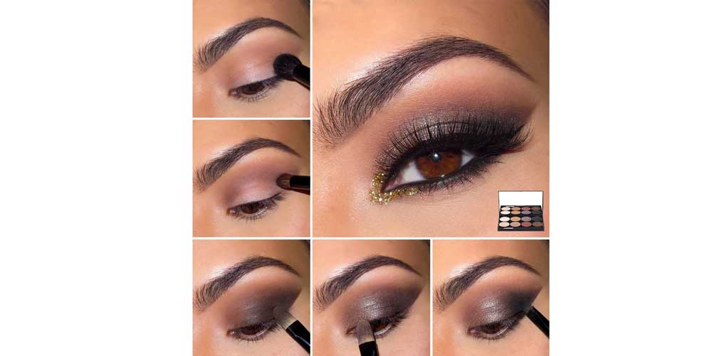

Toca para ver la galería
|
Haz que tus ojos hablen por sí solos por medio de este efecto ahumado con el que lograrás transforma tu apariencia. Hazlo tú misma con la ayuda de este tutorial.
SI
- Tonos negros brillantes o gama de grises más neutros.
- En lugar de utilizar un labial de color intenso, opta por un color más sutil. Los colores naturales son la mejor opción.
NO
- Colores intensos y fuertes en los labios, ya que el centro de atracción son tus ojos.
- No excederse con el rubor, es recomendable poco color sobre los pómulos, con tonos suaves y sutiles, como los rosa y durazno.
INFALTABLES
- Pestañas postizas para hacer ver más grande el ojo y expresivo.
- Delineador en lápiz y líquido.
- Iluminador .
PASO A PASO:
- Comienza aplicando una sombra clara por encima del pliegue del ojo, este será nuestro color de transición.
- Utiliza una sombra marrón en el pliegue y difumínala con una brocha por todo el borde del ojo hasta marcar bien esta separación.
- Coloca una sombra color beige o blanco en el exterior para resaltar el parpado.
- Ahora elige una sombra oscura, en este caso tenemos un vino tinto, para aplicar en la zona externa del ojo hasta la altura que se une el pico con la ceja.
- Pega pestañas y utiliza delineador negro en la parte superior e inferior del ojo para añadir mayor expresividad.
{kind=link}
{kind=link}
{kind=link}
{kind=link}
{kind=link}